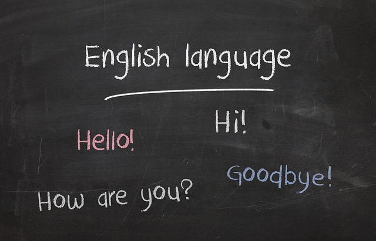

Learn English
Who is B23A? Listen to a song called Hello, hello, hello and sing
along.
Welcome to LearnEnglish Kids
LearnEnglish Kids is brought to you by the
British Council, the world's English teaching experts. We
have lots of free online games, songs, stories and activities for
children. For parents, we have articles on supporting children in
learning English, videos on using English at home and information
about English courses for your child.
Vocabulary
Magazine
Do you like reading about what people do on special days in
different countries?
In this section you can read articles about festivals and
celebrations around the world.
Read, play games, print activities and post comments too!
Grammar videos
Do you like watching videos to help you understand grammar?
In this section you can watch Gran
helping
Kitty to understand how to use English grammar. Watch videos, print activities and post comments!
Do you like practising English vocabulary? In this section there are lots of flashcards for you
to
print. Play flashcards games to help you remember new words. There are also some flashcards for
you
to colour and write!
Do you enjoy making things? In this section there are craft activities for you to print. Try and
speak in English while you are making them. You can post comments too!

Do you like learning about new things in English? We have lots of activity sheets about many
different topics. Download and print the worksheets to do puzzles, quizzes and lots of other fun
activities in English.
